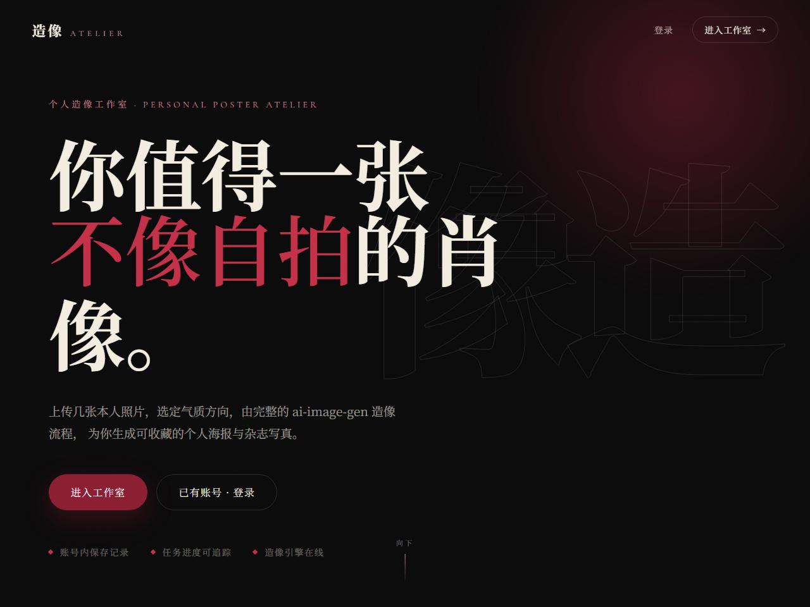
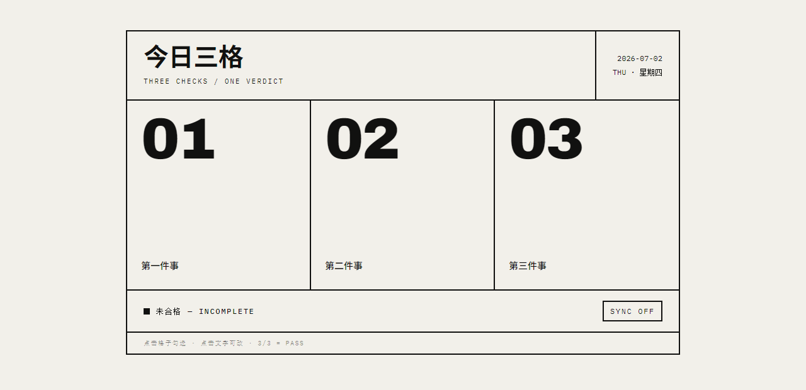
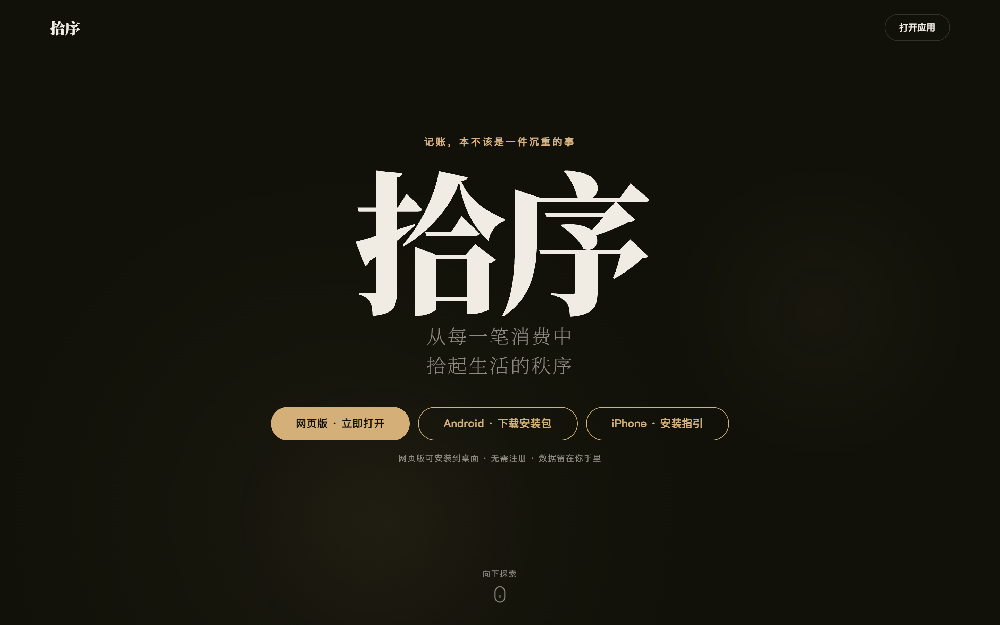
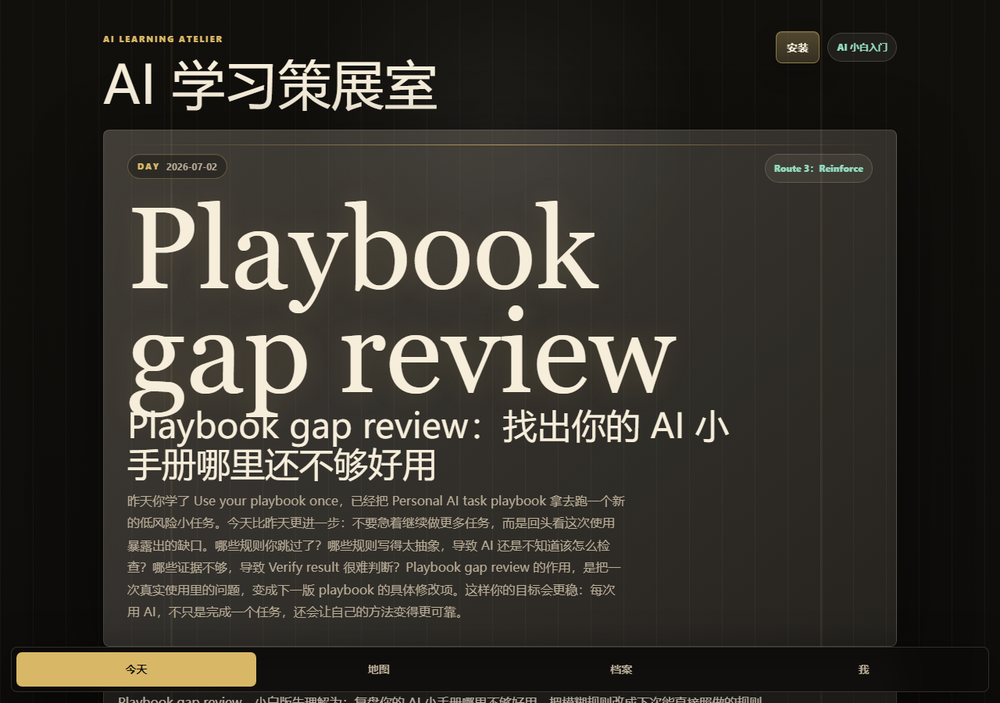
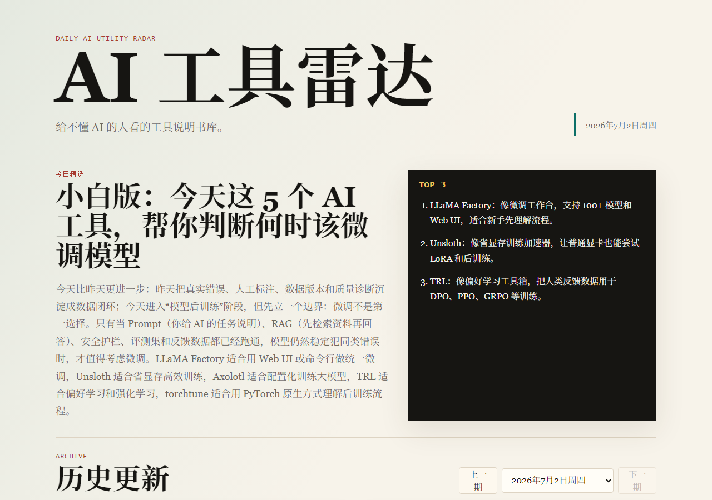
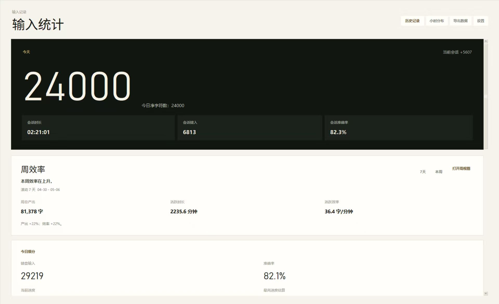
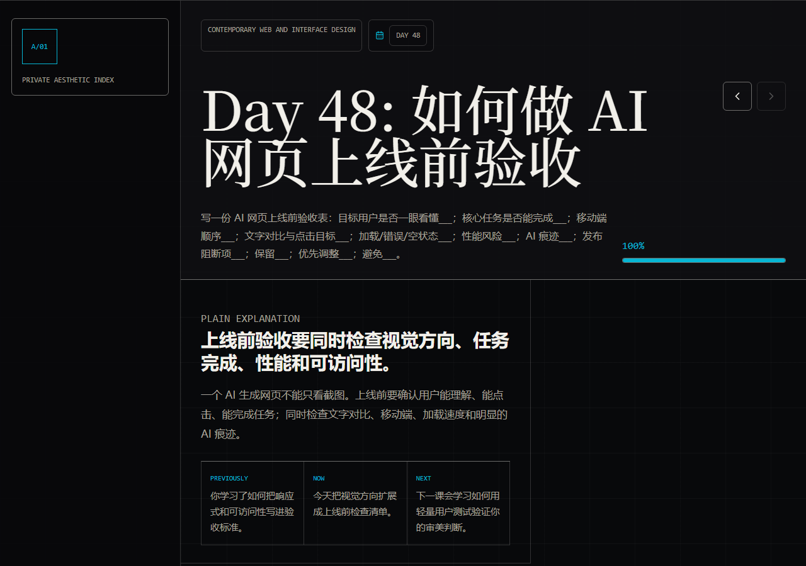
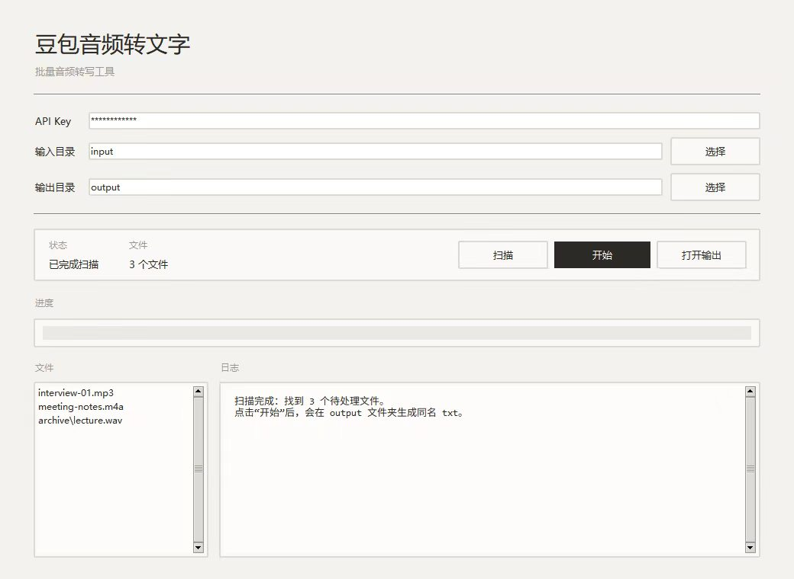
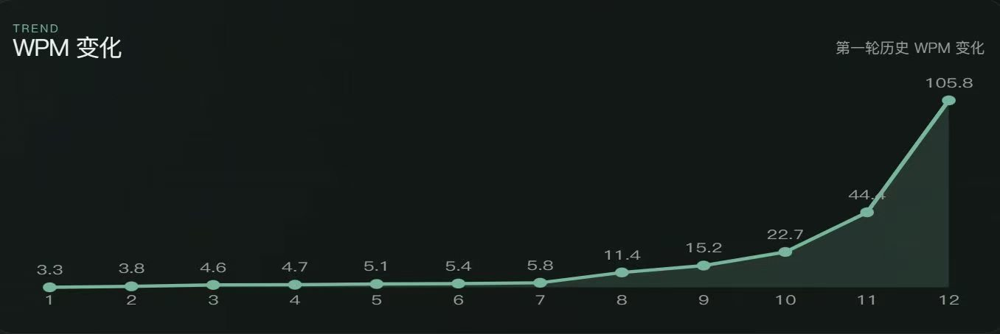
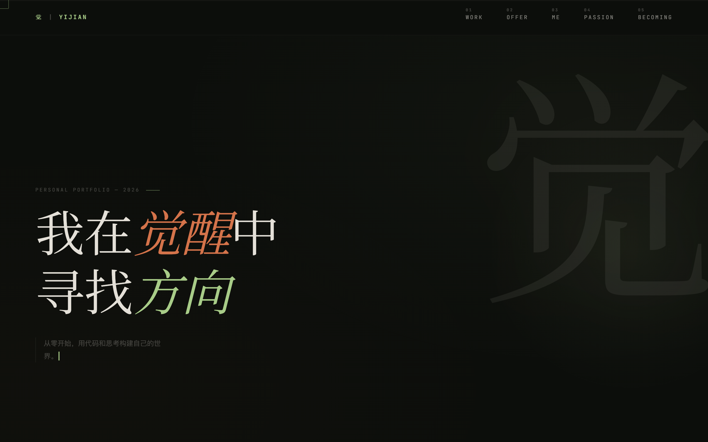

我的作品
每一个项目都是一次从零到一的探索。
我做能被用起来的东西——哪一件正好解决你的问题，就直接拿去用。

造像 ATELIER
上传几张本人照片、选一个气质方向，AI 为你生成杂志级的个人肖像海报——头像、朋友圈封面、简历照都能用。注册即送体验积分，任务异步生成、刷新不丢。从前端到 VPS 后端，每一层都是我独立完成的。

今日三格
每天只问你三件事：勾满三格，今天合格；差一格就是不合格——没有进度条，也没有「差不多」。打开就能用，登录后跨设备同步。它替你回答一个最简单也最难的问题：今天，过关了吗？

拾序记账
金额 → 去向 → 落笔，三步记完一笔账。8 套主题色可切换，数据全部存在你自己的设备里，不上传。不做预算提醒、不制造焦虑——只安静地帮你看清每一笔钱的去向。可安装为手机 App。

AI 学习策展室
一个每天自动更新的 AI 学习网站。每天中午，定时任务在本地唤醒 AI：读取我的学习档案，生成当天一课，提交、部署——全程无人值守。它记得我掌握了什么、还模糊什么，像一位私人策展人。
立即体验
AI 工具雷达
每日一期的免费 AI 工具中文简报，写给不懂 AI 的人看。只收录真正免费、开源、能直接上手的工具，拒绝新闻噪音。每一期都沉淀为可打印的新手手册——日拱一卒，攒成一座工具说明书库。
立即体验
Type Ledger
一个 Windows 桌面小工具，记录每天打了多少字。所有数据存在本地，不上传、不联网。隐私优先。做这个是因为我好奇自己一天下来到底敲了多少键盘——结果比我想象的多。
GitHub


Minimal WPM Tracker
一个极简的阅读速度追踪工具。记录每次阅读的 WPM（每分钟阅读词数），可视化趋势，帮你保持阅读节奏。做这个的起因是：我想知道自己读书到底快不快，但市面上的工具都太重了。
GitHub
个人网站 — 觉
你正在看的这个网站。我提出想法和审美方向，AI 帮我实现代码。从第一版到现在的版本，经历了多次推翻重来。它还在生长。我所信奉的是长期主义——这将是一个伴随我、会迭代一辈子的网站。
查看线上下一格，留给正在做的事
这份清单没有终点。长期主义者的作品集，永远为下一个项目空着一格。